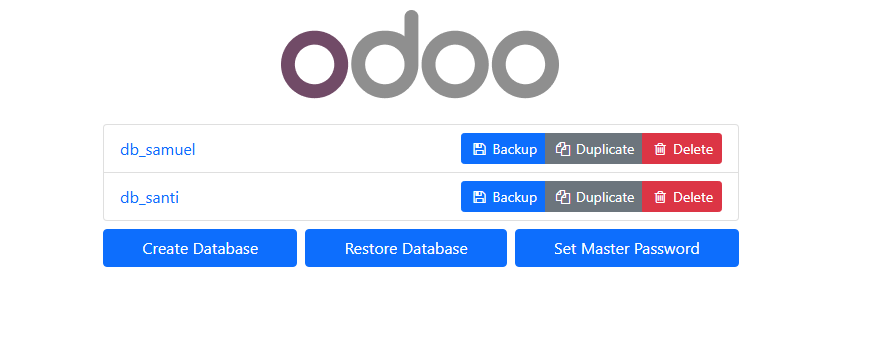

Documentación de instalación y gestión en Odoo
Creación de la cuenta y base de datos
Una vez tenemos hecha la cuenta en Odoo crearemos una base de datos para que se guarde la información que registraremos en nuestra página web.
Módulo de comercio electrónico
En este caso hemos elegido un módulo de comercio electrónico que incluye una tienda y planes de precios. Este módulo permite registrar en la base de datos las compras, cantidades y precios, facilitando enormemente la gestión de ventas y edición de la web.


Para volver al menú de módulos, se debe hacer clic en el icono de cuadrados arriba a la izquierda y seleccionar "Aplicaciones" o "Sitio web" para volver a la página principal.
Funciones del módulo de Inventario en Odoo 16
Craer Productos
Añade todos los productos que dispone la empresa con el precio de venta y el coste del producto

Recepciones (Receipts)
Gestiona la entrada de productos desde los proveedores. Puedes registrar productos entrantes y validarlos al llegar al almacén.
Órdenes de Entrega (Delivery Orders)
Controla la salida de productos hacia clientes. Se pueden preparar, embalar y validar entregas.

Devoluciones (Returns)
Gestiona las devoluciones de clientes o a proveedores. Permite registrar la vuelta de productos al almacén.
Ubicaciones y Almacenes
Permite definir múltiples almacenes y ubicaciones internas (estanterías, zonas, etc.). Soporta rutas personalizadas de movimiento de stock.
Transferencias internas
Mueve productos entre diferentes ubicaciones o almacenes dentro de la empresa.
Ajustes de Inventario
Realiza ajustes manuales para corregir errores de stock físico vs. digital.
Rutas y Reglas
Configura rutas automáticas: por ejemplo, desde proveedor → almacén → cliente. Se puede definir reglas de reabastecimiento y puntos de reorden.
Lotes y Números de Serie
Rastreo avanzado de productos por lotes o números únicos.
Informes de Inventario
Reportes detallados sobre el estado del stock, movimientos, y niveles por almacén.
Copia de seguridad de la base de datos
Para realizar un backup accedemos a: http://localhost:8069/web/database/manager e iniciamos sesión.

Una vez dentro, seleccionamos la base de datos deseada y hacemos clic en el botón Backup.

El sistema nos pedirá:
- Nombre del archivo de copia
- Formato del backup
- Contraseña Master
Tras completar el formulario, se descargará el archivo con la copia de seguridad.

Restauración de la base de datos
Si necesitamos restaurar una base de datos, vamos de nuevo a http://localhost:8069/web/database/manager y pulsamos en "Restore Database".

Introducimos la contraseña master, subimos el archivo de backup, damos un nuevo nombre a la base de datos y completamos el proceso. La base de datos quedará restaurada correctamente.

Conclusiones
Este proyecto nos ha permitido familiarizarnos con la instalación, configuración y uso básico del ERP en Odoo. Hemos visto que se puede crear una base de datos, instalar módulos adecuados según tu convencía y la gestión de copias de seguridad, hemos podido ver que se hacen las cosas de forma sencilla y no liosa y se puede utilizar como herramienta integral de gestión empresarial. Un ERP es una manera muy eficiente de hacer un sistema de gestión sobre una empresa grande o recién creada ya que se pueden gestionar todas las operaciones desde la misma plataforma y de forma sencilla, haciendo las cosas automáticas mejorando la eficiencia.